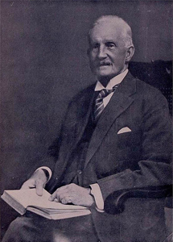
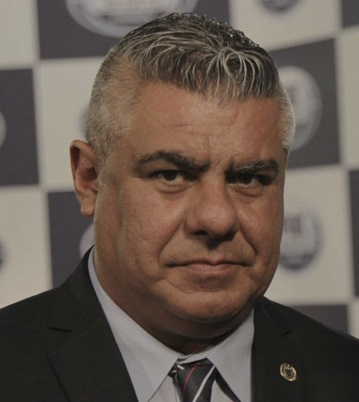

historia de afa
Orígenes
La Asociación del Fútbol Argentino es la más antigua del continente americano y la octava del mundo. El fútbol de este país no solo fue el pionero de América en organización, sino que, en 1912, se convirtió también en el primero del continente en afiliarse a la FIFA, el ente rector de este deporte a nivel universal.
En 1840, llegó, a través del puerto de Buenos Aires, el deporte que más adelante se convertiría en el preferido de toda la Argentina, el fútbol. Los británicos -ingleses, escoceses e irlandeses- buscaban en América una mejor vida y trajeron consigo algo que hacer en los ratos libres, jugar al balompié con una vejiga de vaca como pelota y un par de piedras para demarcar los arcos. La construcción de ferrocarriles en Argentina propició la llegada de más británicos que formaron colonias y fundaron colegios para la educación de sus hijos, en los que era obligatoria la práctica deportiva.
El 20 de junio de 1867, se jugó el primer partido de fútbol en la Argentina. El escenario fue el Buenos Aires Cricket Club, en los bosques de Palermo, próximo al predio donde se levanta el Planetario. Un grupo de entusiastas encabezados por los hermanos Thomas y James Hogg resolvieron en el mes de mayo invitar, por intermedio de un aviso en el diario The Standard, a una reunión para impulsar la práctica del fútbol. Es así como el día 9 del mismo mes se fundó el Buenos Aires Football Club y se organizó el encuentro entre colorados y blancos: ganaron los primeros por 4 a 0, en un partido que se inició a las 12:30 y culminó 2 horas más tarde. Thomas Hogg, eufórico, pontificó que "es el mejor pasatiempo, el más fácil y el más barato para la juventud de la clase media y para el pueblo", pero mientras tanto solo lo jugaban los británicos en sus clubes exclusivos.
Uno de ellos, el escocés Alejandro Watson Hutton, trajo entre sus maletas elementos que no estaban arancelados en la aduana y que crearon desconcierto: pelotas de fútbol e infladores. Nacido en Glasgow, graduado en humanidades en la Universidad de Edimburgo, en 1882 desembarcó para hacerse cargo del colegio Saint Andrew. Allí implantó la práctica deportiva y la cultura física. El interés por el fútbol creció entre los alumnos pero la relación de Hutton con las autoridades del colegio se deterioró. Este hecho lo llevó a alejarse del establecimiento y fundar el Buenos Aires English High School, base del mítico Alumni Athletic Club.
Fue la primera Argentine Association Football League la encargada de organizar, en 1891, el primer campeonato de fútbol que se disputó en Buenos Aires. El presidente de dicha asociación era F. L. Wooley. El título fue compartido por Saint Andrew's y Old Caledonians. Los otros equipos que participaron fueron Buenos Aires Football Club, Buenos Aires and Rosario Railway, Belgrano Football Club y Hurlingham Football Club. Pero resultó muy efímera aquella liga, porque no contaba con el apoyo del importante club Quilmes Rowers ni del principal impulsor del fútbol en tierras argentinas: el profesor Watson Hutton, considerado como "El Padre del Fútbol Argentino".
Tras la desaparición de aquella Argentine Association Football League de 1891, y tras el paréntesis de 1892, el 21 de febrero de 1893 fue fundada la homónima Argentine Association Football League, por Alexander Watson Hutton, y los representantes de Quilmes Rovers, Buenos Aires Railway, Buenos Aires English High School Athletic (que luego se convertiría en Alumni), Lomas Athletic y Flores Athletic. Su sede, que luego se mudó a la calle Del Temple (hoy Viamonte), a pocas cuadras de donde se encuentra actualmente, estaba ubicada en Venezuela 1230. Allí se acordaron las bases del campeonato que se disputó ese mismo año y que tuvo a Lomas Athletic como ganador.
La primera comisión estuvo integrada por:
Presidente: Alejandro Watson Hutton
Vicepresidente: B. Guy
Tesorero: F. Webb
Secretario: A. Lamont
Vocales: F. Syngleton, W. Reynolds, E. Morgan, G. Bridges, W. Rudd y B. Syers.

El 16 de junio de 1904, el presidente de la Nación, Julio Argentino Roca, fue el primer mandatario que asistió a un encuentro de fútbol en Argentina. El partido fue Alumni frente a Southampton, equipo inglés que realizaba una gira por Buenos Aires.
Más adelante, debido al crecimiento explosivo de clubes futboleros, se produjeron infinidad de controversias entre clubes y asociaciones. Fue así que, con la creación de entidades disidentes, se disputaron torneos paralelos entre 1912 y 1914 y entre 1919 y 1926. En el primer periodo mencionado se produjo la irrupción de la Federación Argentina de Football y, tras unos años de tregua entre 1915 y 1918, se creó la Asociación Amateurs de Football, la que a fines de 1926 se reunificó con el ente oficial, por ese entonces llamado Asociación Argentina de Football, y la nueva entidad pasó a denominarse Asociación Amateurs Argentina de Football. Luego de largas y duras controversias, el 10 de mayo de 1931 en una reunión en la que participaron los representantes de los clubes Atlanta, Argentinos Juniors, Boca Juniors, Chacarita Juniors, Estudiantes de La Plata, Ferro Carril Oeste, Gimnasia y Esgrima La Plata, Huracán, Independiente, Lanús, Platense, Quilmes, Racing Club, River Plate, San Lorenzo, Talleres (RdE), Tigre y Vélez Sarsfield, se resolvió fundar la Liga Argentina de Football, que blanqueó el profesionalismo de la actividad, hasta ahí encubierto. El 31 de mayo comenzó la era del campeonato profesional con 18 equipos. Tres años y medio después, a fines de 1934, la organización sufrió una nueva reestructuración, con la fusión de la Liga Argentina con la Asociación Argentina de Football (Amateurs y Profesionales) -nombre del ente oficial desde junio de 1931- para formar la Asociación del Football Argentino, que organizó su primer torneo en 1935 y perdura hasta la actualidad.2
De todas maneras, en 1946 se produjo un nuevo cambio, pero esta vez idiomático: castellanizó su denominación y pasó a llamarse Asociación del Fútbol Argentino.
Presidente de AFA
El presidente representa legalmente a la AFA. Tiene como atribuciones: ejecutar las decisiones de la Asamblea y del Comité Ejecutivo a través de la secretaría general, velar por el funcionamiento de los órganos internos, supervisar el trabajo de la Dirección General Ejecutiva, las relaciones con los miembros, la FIFA y la Conmebol, nombrar al director general y al director de finanzas, presidir la Asamblea y el Comité Ejecutivo, y hacer acuerdos.
Para ser presidente debe ser argentino y residir en territorio nacional, haber sido durante tres de los últimos siete años presidente o vice de un club o una liga, no haber sido declarado culpable con sentencia firme de un caso penal y presentar una declaración jurada cada año. En caso de vacante, lo reemplaza el vicepresidente primero.
Las elecciones de los miembros del Comité Ejecutivo se celebran por listas de candidatos integradas por al menos una mujer, un presidente, tres vicepresidentes, once integrantes y ocho suplentes. Para ser electo se requiere más del 50% de los votos válidos emitidos por la Asamblea o mayoría simple entre las dos listas más votadas. Antes de la elección, deben someterse a un examen de idoneidad por el Tribunal de Ética. El mandato dura cuatro años con posibilidad de dos reelecciones directas, asumiendo el mismo día en que son elegidos.
